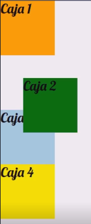
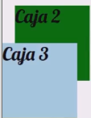

Position
Esta es una propiedad de gran importancia en CSS; nos permite determinar la posición en la que se ubicarán uno o más elementos en un contenedor. Esta propiedad cuenta con diversos valores, cada uno con su propio efecto y particularidades:
Valores
Static
-
Este se trata del valor por defecto de los elementos HTML. Básicamente su valor es nulo, ya que le indica al navegador que el elemento no se encuentra posicionado de forma especial (sigue el flujo normal del documento).
Relative
-
Este segundo valor posee una mecánica interesante: permite desplazar algún elemento sin que este pierda su espacio designado. Recordemos que todos los elementos HTML tienen un lugar designado por defecto. El efecto de esta propiedad es que se puede desplazar el elemento por el eje X y el eje Y, a la vez que este continúa conservando su espacio original.
Ejemplo

Como se puede apreciar en este ejemplo, la caja uno se encuentra desplazada a la derecha y hacia abajo; sin embargo, el espacio designado por defecto para ella le sigue perteneciendo.
Funcionamiento
Al aplicarse el valor relative, el elemento en cuestión adquiere la capacidad de utilizar cinco nuevas propiedades para su desplazamiento:
Eje Y
- Top
- Bottom
Eje X
- Left
- Right
Eje Z
- z-index
Desplazamiento en ejes X e Y
Para desplazar el elemento hay que tener en cuenta que el punto de partida es el espacio asignado por defecto. Esta propiedad le brinda prioridad a los valores left y top; si se incluyen right o bottom junto a ellos, estos últimos podrían ser ignorados según el caso.
Nota: El objetivo de estas propiedades es distanciar el elemento de su respectiva dirección, por ello el efecto es inverso al nombre: al darle un valor a left, se desplaza hacia la derecha.
Desplazamiento en el eje Z (z-index)
-
El desplazamiento en el eje Z se adquiere al posicionar los elementos. Por defecto, los elementos declarados al final del HTML se muestran por encima de los primeros si se sobreponen.

Para modificar este flujo, se asigna un valor numérico a la propiedad z-index; se mostrará por encima el elemento con el valor más alto.
Nota: Una buena práctica es definir el aumento de los valores de 10 en 10 (10, 20, 30...) para tener margen si necesitamos ubicar elementos intermedios después.
Conflicto de contenedores padres e hijos
Por lo general, es imposible ubicar al contenedor por encima de su elemento hijo. Sin embargo, existe un truco técnico:
Se posicionan tanto el padre como el hijo (usando relative o similar).
No se define z-index en el padre.
Se define un valor de -1 en el z-index del hijo.
Absolute
-
El efecto es similar a relative, pero con tres diferencias clave:
El elemento pierde su espacio reservado en el flujo y se vuelve "flotante". El navegador utiliza su hueco para otros elementos.
Sus dimensiones se ajustan a su contenido por defecto, a menos que se definan width y height.
Se posiciona respecto al Viewport o al contenedor posicionado más cercano (normalmente el padre con position: relative;).
Centrar elementos con Absolute
Se logra definiendo un valor de "0" en top, left, right y bottom y añadiendo margin: auto;. El navegador compensará los márgenes para centrarlo exactamente.
Fixed
-
Similar a absolute, pero el elemento queda fijo en la pantalla (Viewport) incluso al hacer scroll. Se usa para menús de navegación o publicidad persistente.
Tip de diseño: Para que un elemento fixed no tape el inicio del contenido, se puede añadir un padding-top al body.
Sticky
-
Es una mezcla de relative y fixed. El elemento se comporta como un elemento normal hasta que, al hacer scroll, alcanza una posición definida (ej. top: 0;), momento en el cual se "pega" a la pantalla y sigue al usuario.
Nota: Es obligatorio declarar al menos una propiedad de dirección (como top o bottom) para que sticky funcione.